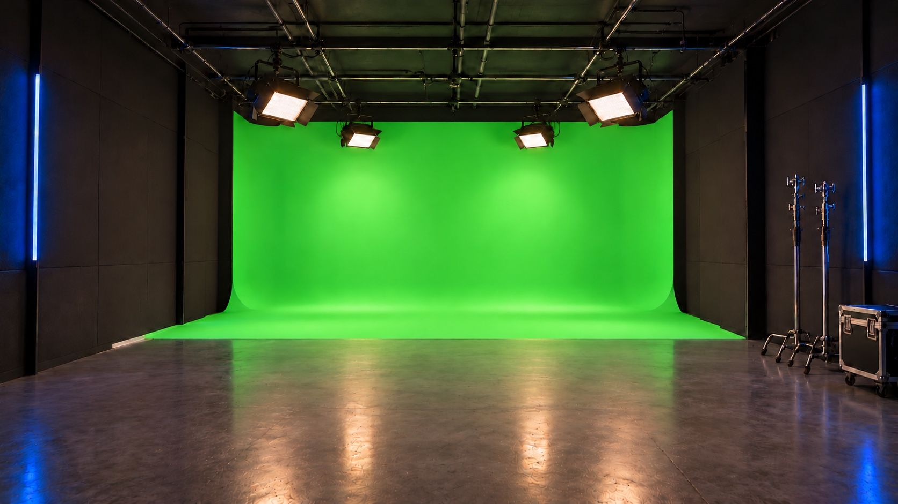
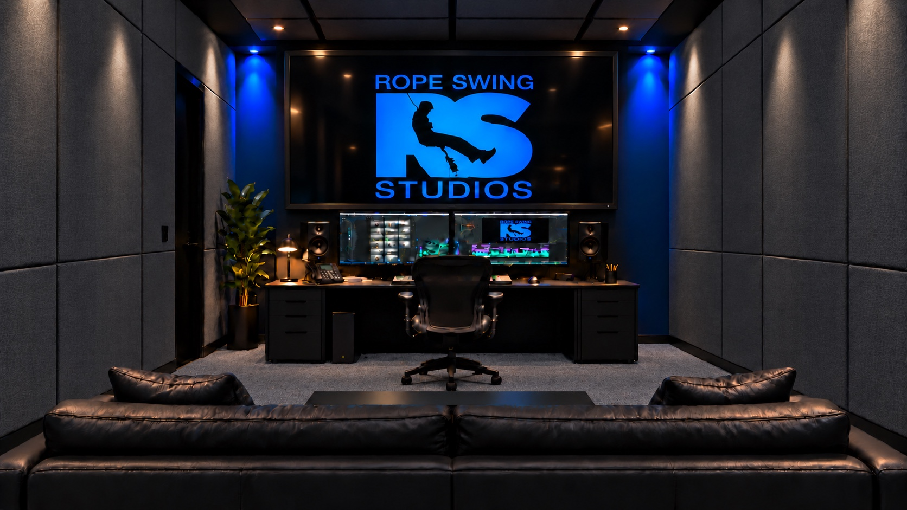
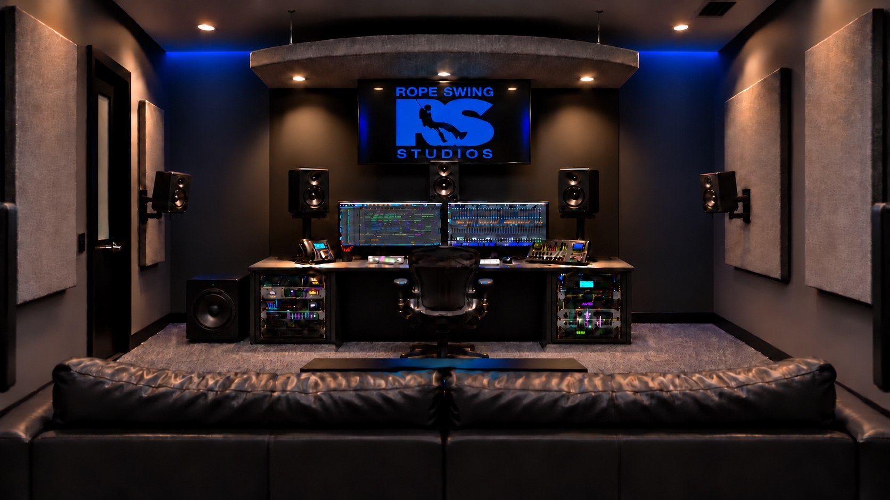

OUR STUDIO
A good story
is the place to begin.
We make room for ideas to find their form—on screen, in a game, and beyond.



We make room for ideas to find their form—on screen, in a game, and beyond.


